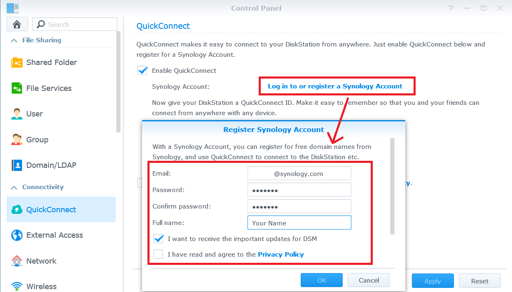

Přístup k serveru Synology NAS přes Internet a sdílení souborů

Přehled
Pomocí služby QuickConnect je možné se k serveru Synology NAS snadno připojit přes internet, aniž by vás obtěžovalo nastavování pravidel pro předávání portů nebo jiná komplikovaná síťová nastavení. Služba QuickConnect umožňuje připojit se prostřednictvím jednoduché upravitelné adresy, např. Quickconnect.to/příklad.
1. Nastavení služby QuickConnect
- Přejděte do části Ovládací panel > QuickConnect.
- Zaškrtněte políčko Povolit QuickConnect.

- Pokud nemáte účet Synology, klikněte na možnost Přihlásit se nebo zaregistrovat účet Synology. Zadejte požadované údaje a klikněte na možnost OK. Pokud již účet Synology máte, zadejte údaje o účtu.
- Vytvořte si vlastní QuickConnect ID v poli QuickConnect ID. Poté klepněte na možnost Použít.

- Zobrazí se informace s odkazem QuickConnect. Pomocí těchto odkazů je možné k serveru Synology NAS získat přístup. V tomto případě je adresou pro systém DSM http://Quickconnect.to/YourID.

- Pokud nevidíte odkaz QuickConnect DSM, klikněte na možnost Rozšířené a ověřte si, jestli je systém DSM povolen.

- Odkaz QuickConnect DSM je nyní možné používat pro přístup k serveru Synology NAS!

2. Sdílení souborů na server NAS pomocí služby QuickConnect
Když je služba QuickConnect povolena, je možné snadno sdílet soubory uložené na server Synology NAS s kýmkoli, aniž byste se museli starat o předávání portů.
- Nejprve povolte připojení HTTPS, aby bylo možné bezpečně sdílet soubory. Přejděte do části Ovládací panel > Síť.
- Zaškrtněte políčko Povolit připojení HTTPS a klikněte na možnost Použít.

- Potom povolte sdílení souborů pro službu QuickConnect. Přejděte do části Ovládací panel > QuickConnect.
- Klikněte na možnost Rozšířené a zaškrtněte políčko Sdílení souborů.

Poznámka:
Při konfiguraci rozšířených nastavení QuickConnect doporučujeme přihlásit se k systému DSM pomocí IP adresy nebo domény serveru Synology NAS.
- Nyní jste připraveni začít sdílet pomocí služby QuickConnect. Otevřete službu File Station a pravým tlačítkem klikněte na soubor nebo složku, kterou chcete sdílet. Potom klikněte na možnost Sdílet odkazy souborů z kontextové nabídky.

- Vygeneruje se odkaz sdílení souboru. Tento odkaz stačí sdílet s rodinou a přáteli, aby si sdílený soubor či složku mohli stáhnout.